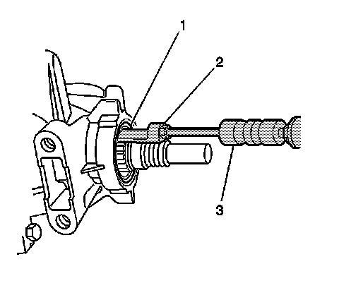
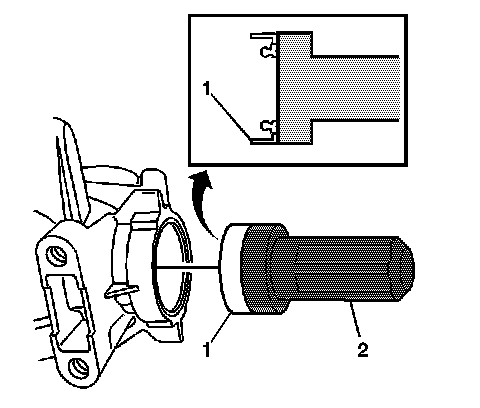

Drive Flange and Seal Replacement
Drive Flange and Seal Replacement
Tools Required
* J 6125-1B Slide Hammer
* J 23129 Universal Seal Remover
* J 29873 Injector Nozzle Socket 30 mm
* J 44765 Seal Installer
* J 45012 Holding Fixture
* J 45019 Universal Puller
Removal Procedure
1. Raise and support the vehicle. Refer to Lifting and Jacking the Vehicle (Service and Repair) .

2. Remove the transmission manual shift shaft nut.
3. Disconnect the shift linkage from the transmission.
4. Place the transmission in neutral by rotating the transmission shift shaft clockwise 2 clicks.
5. Remove the exhaust system. Refer to Exhaust System Replacement (Service and Repair) .

6. Disconnect the propeller shaft coupler (1) from the transmission flange. Refer to Rear Propeller Shaft Replacement (RWD) (Rear Propeller Shaft Replacement (RWD)) .
7. Push the front propeller shaft toward the rear of the vehicle in order to release the propeller shaft coupler (1) from the transmission drive flange.

8. Secure the front propeller shaft (1) to the shift control lever (3) with a piece of mechanics wire (2).

9. Install J 45012 to the drive flange.
10. While holding J 45012 . Remove the drive flange nut using J 29873 .
11. Remove J 45012 from the drive flange.

12. Remove the drive flange thrust washer (4).
13. Remove the drive flange (2) using J 45019 .
14. Remove the drive flange O-ring seal (3) from the drive flange.
15. Remove the output shaft assembly retainer (1).

16. Use J 6125-1B and J 23129 to remove the transmission case extension seal (1).
Installation Procedure

Important: Install the seal onto the tool before installing into the case to prevent damage to the seal.
1. Using J 44765 install the new transmission case extension seal (1).
2. Install a NEW output shaft assembly retainer (1). Position the retainer on end of the output shaft splines. The retainer will be pushed to the proper depth as the drive flange is installed onto the output shaft.
3. Install a NEW drive flange O-ring seal (3) into the drive flange.
4. Install the drive flange (2) to the transmission output shaft.
5. Install a NEW drive flange thrust washer (4).
6. Install the J 45012 to the drive flange.
Notice: Refer to Fastener Notice (Fastener Notice) .
7. While holding J 45012 Install a NEW drive flange nut using J 29873 .
Tighten the drive flange nut to 57 N.m (42 lb ft).
8. Remove J 45012 from the drive flange.
9. Remove the mechanics wire (2) securing front propeller shaft (1) to the shift control lever (3).
10. Install the propeller shaft coupler (1) to the transmission flange. Refer to Rear Propeller Shaft Replacement (RWD) (Rear Propeller Shaft Replacement (RWD)) .
11. Install the exhaust system. Refer to Exhaust System Replacement (Service and Repair) .
12. Place the transmission in the park position by rotating the shift shaft fully counter clockwise.
13. Connect the shift linkage to the transmission.
14. Install the transmission manual shift shaft nut.
Tighten the transmission manual shift shaft nut to 9 N.m (80 lb in).
15. Check the transmission fluid level. Refer to Transmission Fluid Check (Transmission Fluid Check) .
16. Lower the vehicle.